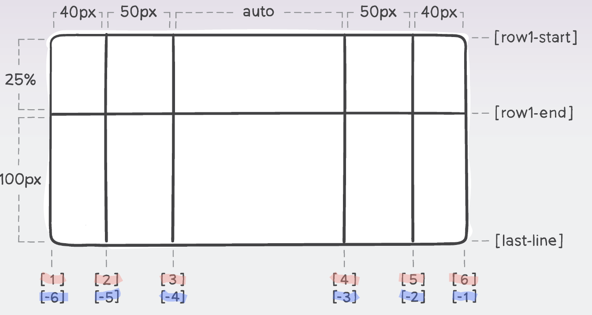
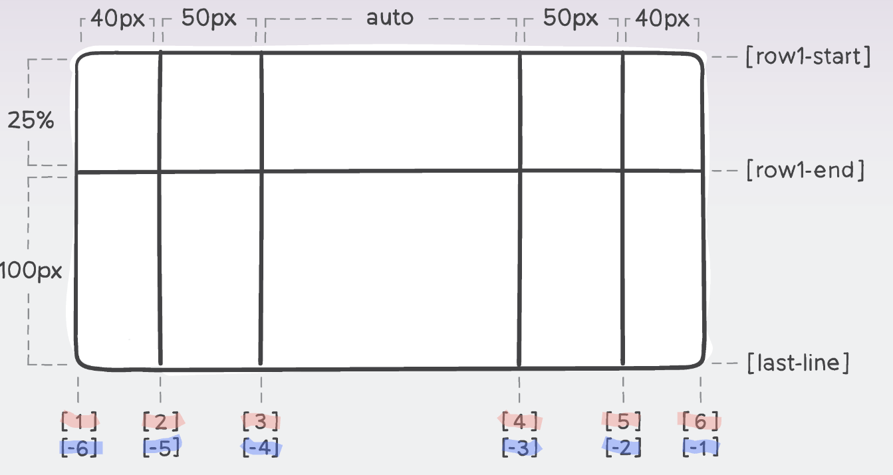

Just to reiterate from the flexbox section, this is what happens when we create a regular div container with some block-level paragraph elements inside it:
We make a CSS block-level grid container by applying 'display: grid' to a < div > element which has some children elements (aka items) inside of it. If we want the container to be inline-level we simply change this value to 'display: inline-grid'. When we do this, nothing actually changes on the web page! But now our grid container's items are ready to be moved about and transformed in many different ways. As you can see, this container looks the same as before:
New Grid Terminology
Grid, being a completely new layout system, comes with its own terminology and theory that should be understood before understanding any of the grid properties themselves. These will mostly be demonstrated through images:
Grid Lines
A grid is made up of lines, which run horizontally and vertically. If your grid has four columns, it will have five column lines including the one after the last column. Lines are numbered starting from 1, with the numbering following the reading direction. However, the lines are also numbered negatively starting from the opposite direction to the writing mode, starting with -1. We can see this in the highlighted sections of the second image.
 

Grid Tracks (Rows/Columns)
A track is the space between two grid lines. A row track is between two row lines and a column track between two column lines. Essentially, they are the columns or rows of the grid. When we create our grid we create these tracks by assigning a size to them.

Grid Cells
A grid cell is the smallest space on a grid defined by the intersection of row and column tracks. It's just like a table cell or a cell in a spreadsheet. If you define a grid and don't place any of the items they will automatically be laid out one item into each defined grid cell.

Grid Area
Any number of grid cells together, surrounded by four grid lines. Grid areas are created by causing an item to span over multiple tracks.

Gaps
A gap between grid cells. For sizing purposes these act like a regular track. You can't place content into a gap but you can span grid items across it.

Here you can see all the new terminology together in one image:

Creating a basic grid: rows, columns and gaps
GRID-TEMPLATE PROPERTIES
Now that we're familar with new terms and grid-specific characteristics, let's get back to making a grid container and understand what are the different ways we can edit and customise our grid.
Now that we have a grid container with some items inside it - the amount we want to appear - we tell CSS how to organise these items into columns by applying the 'grid-template-columns:' property and how to organise these items into rows by applying the 'grid-template-rows:' property followed by one or more size values.
The values we apply for each property define how many columns or rows we want in our container, and how big or small they are.
For example, imagine we have six items in total in our grid container. If I want two rows of three items then we would apply the following CSS:
grid-template-columns: 100px 100px 100px (3 columns of these sizes)
grid-template-rows: 100px 100px (2 rows of these sizes)
Which looks like this (plus a bit of padding to see the container better):
Notice if I change the amount of values for each property, the layout of the grid changes accordingly:
grid-template-columns: 100px 100px (2 columns)
grid-template-rows: 100px 100px 100px (3 rows)
Or if I change the sizes, the appearance of the columns and rows changes accordingly:
grid-template-columns: 50px 150px 50px (3 columns)
grid-template-rows: 50px 100px (2 rows)
Instead of applying these properties individually to set our columns and rows, we can use the 'grid-template:' shorthand property to do it. We write size values like before, but to differentiate between the columns and rows we write a forward slash (/) in our value. For example:
grid-template: 50px 150px 50px (columns) / 50px 100px (rows)
But what happens if, either by mistake or deliberately, we don't specify enough columns or rows for the items we have in our container? In the example below, we have two columns defined and two rows defined for six items. That is, four items are told what to do, but what happens to the fifth and sixth items?
grid-template: 100px 100px (2 columns) / 150px 100px (2 rows)
The fifth and sixth items are automatically added onto the grid (aka 'implicit grid tracks' ) and have the 'auto' value applied to them, meaning they stretch to match column or row sizes, but when possible will only stretch to fit their content. You can see that although boxes 5 and 6 have the same width as the other boxes, they don't have the same height.
This is because we have other properties like the 'grid-auto-rows:' and 'grid-auto-columns:' properties which define the size of automatically added-on grid items (those which aren't defined by the previous 'grid-template' properties) - either in the row or column direction. By default the value is set to 'auto' but we can change this to a single size value, or multiple size values. Compare the third row of the grid below (value '75px') with that of the grid above:
We can specify where or how these automatically added-on grid items are added on to our grid (and thus decide whether we need the 'grid-auto-row' or 'grid-auto-column' property) by applying the 'grid-auto-flow:' property - similar to 'flex-direction:' for flexbox. There are three values for this property:
- row (default): fills in each row in turn, adding new rows as necessary.
- column: fills in each column in turn, adding new columns as necessary.
- dense: tells the auto-placement algorithm to attempt to fill in holes earlier in the grid if smaller items come up later. That is, smaller items that come later in our HTML can be moved up in the grid to fill in any gaps that are present. Note: this only changes the visual order of items, not the actual order of items in our HTMl which is bad for usability reasons.
GRID GAPS
We can set gaps for our grid in either the row or column direction by using the 'row-gap:' or 'column-gap:' properties., followed by a length unit as a value. By default these properties have a value of '0' meaning any gaps are removed. For example:
'row-gap: 2rem'
'column-gap: 2rem'
To set both the row and column gaps at the same time we can use the 'gap:' shorthand property followed by two size values (rows first, columns second). For example:
'grid-gap: 3rem (row) 1rem (column)'
Other Grid Related Features
FRACTION 'fr' UNITS
Above we have been using the typical length units that we normally use in CSS (px, em, rem, %). However, using these length units for our grid can be troublesome when we start dividing out the space between the items and the content, or the item's content has different sizes, and starts requiring more complicated math.
For example, if we have four items and give each item a percentage value of 25% then the total length of the parent grid is 100% (of the web page or the space within the container). But if we give one of these items a length of 50% then the grid overflows the page/container because the other items still have a 25% length value, giving the parent grid a total length of 150% of the web page/container area. No adjustment happens between the items.
With grid comes a new length unit: fraction or 'fr' which is defined as "a unit which represents a fraction of the remaining available space in the grid container." This unit is very versatile because it divides the space between the items proportionally and does all the hard calculations for us.
For example, if we have the same four items and give each item a fractional unit value of '1fr' then what will happen is all the fractional unit values will be added together (1 + 1 + 1 + 1 = 4) and then the space will be distributed to each item according to the fractional unit value it holds. In this case, 1/4th of the space (or, 25%). If we make one of these items 2fr, then the new total value is 5 and the items will adjust their size accordingly with their fractional unit portion (or, 40% 20% 20% 20%). This is true even if we add grid gaps and adjust their size: with fractional units, the grid items always automatically adjust in size for us.
Note 1: a fractional unit compromises of two things: a maximum and minimum value. The maximum value is the value we give the item (e.g. 1fr, 2fr etc) and the minimum or 'auto' is the size of the content inside the item - that is, the item won't get smaller than the content inside it, however, it is possible to override this auto value.
Note 2: it's possible combine fractional units with regular length units. All that happens is the regular length units are assigned their space first, and then the rest of the space is proportionally distributed between the remaining fractional unit items. The examples below should help us understand this new length unit:
grid-template-columns: 1fr 1fr 1fr 1fr (equal space distribution)
grid-template-columns: 1fr 1fr 1fr 3fr (7 parts or 'fractions' in total, item four occupies 3 of these parts)
grid-template-columns: 100px 1fr 2fr 200px (fixed length items mixed with fraction length items)
REPEAT( ) NOTION
Above in our first container we repeated '1fr' four times to establish four columns of equal length. To avoid value repetition in our CSS code we can use the 'repeat()' notion as the value for our property where in the brackets we state 1) how many repetitions we desire of X length, 2) a comma, 3) the length we desire. Again, we can mix this value with other normal CSS length unit values. See the examples below:
grid-template-columns: repeat(4, 1fr)
grid-template-columns: repeat(4, 1fr) 100px 100px
OTHER GRID SIZE VALUES
Below are six size values that we can give as the value for our columns/rows. The difference? They are not length units as such, but are keywords or functions() that we use to specify the item length in a different way. The keywords can be used on other block or inline-block elements in CSS, not just grid elements. Below these four size values are listed out and explained in more detail:
- auto: boxes will stretch to fill any additional space by default in the grid container. Similar to fraction units in their working but when put against fraction units, auto units win the battle for the remaining space over fraction units.
- min-content: makes a box as small as it can be (using the widest bit of content as the reference point) without causing any overflow to occur (i.e. all the content still fits the box).
- max-content: makes a box as wide as is needed to contain all the content within the box(es), meaning it will overflow and not wrap if necessary.
- fit-content: makes a box adjust its size according to the space it is given. If there is not much space it will default to the min-content size. If there is plenty of space it will default to the max-content size (but never more than this). Otherwise, it will simply use the space available.
- fit-content(): this function will make the row/column as long as possible if there's enough space, otherwise, when it reaches the length unit given in the parenthesis it will stop there and start to wrap the content. Thus, the length unit stated is a 'maximum' length for the content.
-
minmax(): this function allows us to define a size range for a row/column. We set a minimum size and a maximum size, meaning the row/column/item might be bigger than the minimum or smaller than the maximum size, but they will never surpass the limits we set. Note: it's possible to use the above keyword values within the minmax() function. For example: "minmax(min-content, 300px)" which means the item is as wide as the content, but at most 300 pixels.
Note: we can use the minmax() function to make rows/columns (tracks) have an equal size. Replace 1fr as a track size with minmax(0, 1fr) making the minimum size of the track 0 and not the min-content size. This frees up all the grid space to be distributed between the boxes equally.
...The differences between the above sizing words can nicely been seen here.
Note: "extrinsic" sizing is when we apply a specific size value to a box whereas "intrinsic" sizing is when the content defines the size of the box.
grid-template-columns: auto; grid-auto-flow: column;
grid-template-columns: repeat(4, min-content);
grid-template-columns: repeat(4, max-content); ...doesn't wrap!
If the above happens, this is when we would use the 'fit-content' keyword:
grid-template-columns: fit-content; grid-auto-flow: column;
grid-template-columns: fit-content(120px) fit-content(160px) fit-content(180px) auto
grid-template-columns: minmax(min-content, 300px) minmax(200px, 1fr) 150px;
AUTO-FILL & AUTO-FIT
While we're looking at different ways to size our boxes and new values for our CSS rule-sets, let's take a look at the values 'auto-fill' and 'auto-fit':
If we don't want to specify the number of tracks, but instead we want to create as many as will fit in our container then we can achieve this with the 'repeat()' function and 'auto-fill' or 'auto-fit' keywords.
These keywords tell the browser to handle the track sizing and element wrapping automatically for us so that the elements will wrap when the width is not large enough to fit them in without any overflow. Using the fraction unit also ensures that in case the width allows for a fraction of a track to fit but not a full track, that space will instead be distributed over the track or tracks that already fit, making sure we aren't left with any empty space at the end of the row.
So what's the exact difference between the two values?
auto-fill = automatically fills new space with more columns, even if those columns are empty, affecting the size of the original columns in the process.
auto-fit = automatically fits the current columns with content grow to fill the new space (in fact, new columns are being created here, but they're immediately collapsed so they don't take any space and the current columns grow to fill the space - see here for a visual representation of this).
Really, the difference between the two is only noticeable when the row is wide enough to fit more columns in it!
Note: in the web developer world, for CSS grid, people talk about 'implicit' and 'explicit' tracks. The difference is 'implicit' tracks are those generated automatically by the grid container and 'explicity tracks are ones that we the web developer define.
Back to Building a Grid
"justify":
another way of saying 'inline-axis' (X-axis). It's just a name, it doesn't mean anything in itself.
"align":
another way of saying 'block-axis' (Y-axis). Again, it's just a name.
"-content":
properties ending with this keyword move the empty container space around the flex/grid items, and thus move the whole block of items/content within the container simultaneously. However, this is as long as the parent container is bigger than its children because empty space is required for these properties to work! That's why it's quite normal to set the parent's height so that it's deliberately bigger than it would normally be, in order to achieve the effects delivered by the '-content' properties. Note: with these properties the items themselves don't change in size (except stretch which makes items take up all free space), only the distribution or positioning of the items relative to parent container (due to the moving round of empty space).
"-items":
properties ending with this keyword look at each column or row track individually and tell the grid items where and how to line up within their individual cells, moving all the items together simultaneously within the track (except stretch which makes items take up all free space). That is, the items line up in relation to each other.
To avoid confusing with CSS Flexbox, these are the properties that we can apply to CSS Grid:
- 'justify-content:' (aka inline-axis-content) moves space around along the inline-axis and thus moves the whole block of items/content within the container.
- 'justify-items:' (aka inline-axis-items) aligns cell within individual cells/track along the inline-axis.
- 'justify-self (aka inline-axis-self) is 'justify-item' but for one item and this property overrides the more general 'justify-items:' declaration.
- 'align-content:' (aka block-axis-content) the same as above but along the block-axis.
- 'align-items:' (aka block-axis-items) the same as above but along the block-axis.
- 'align-self:' (aka block-axis-item) is 'align-item' but for one item and this property overrides the more general 'align-items:' declaration.
- 'place-content:' the shorthand for both the 'justify-content:' and 'align-content' properties.
- 'place-items:' the shorthand for both the 'justify-items:' and 'align-items' properties.
- 'place-self:' the shorthand for both the 'justify-self:' and 'align-self' properties.
'justify-' (inline-axis) Grid Properties
JUSTIFY-CONTENT
The 'justify-content:' property, in the same way as justify-content for flexbox, moves the empty container space around the grid items along the inline-axis, and as a result, moves the whole block of items/content within the container simultaneously. This only works if the parent is bigger than the items (i.e., there's empty space to work with). Here the the items themselves don't change in size (except stretch which makes items take up all free space), only the distribution or positioning of the items relative to parent container (due to the moving round of empty space).
The values we can apply here are: stretch (default) | start | center | end | space-between | space-around | space-evenly. In the following examples we will use a typical 3x3 grid layout with a bit of padding and a small grid-gap space, with all the containers having this property applied to them: "grid-template-columns: auto auto auto;"
start: empty space placed to the right, pushing the items to the start of the container's inline axis.
center: empty space placed to the left and right, pushing the items towards the center of the inline-axis.
end: empty space placed to the left, pushing the items to the end of the container's inline axis.
space-between: the empty space is distributed between the items along the inline-axis.
space-around: the empty space is distributed around the items along the inline-axis, adding space before the first item and after the last one.
space-evenly: the empty space is equally distributed between and after the items along the inline-axis.
JUSTIFY-ITEMS
The 'justify-items:' property, unique to CSS Grid, affects the column tracks individually along the inline-axis, telling the grid items where and how to line up within their individual cells, moving all the items together simultaneously within the track (except stretch which makes items take up all free space). That is, the items line up in relation to each other.
The values we can apply here are: stretch (default) | start | center | end . We will use the same container type as in the examples before in order to show the following examples:
stretch (default): items will stretch across the whole inline-axis.
start: items will be positioned at the start of each column along the inline-axis, only occupying the required space for their content.
center: items will be positioned in the middle of each column along the inline-axis, only occupying the required space for their content.
end: the opposite of 'start'
JUSTIFY-SELF
The 'justify-self:' property, unique to CSS Grid, is like the 'justify-items:' property but only for one individual cell, and overrides this latter property if it is applied in the CSS grid. The same values as before can be applied:
Notice how item 5 with the declaration 'justify-self:start' applied to it is aligned differently to the other items which have the 'justify-align: center' declaration applied to them.'align-' (block-axis) Grid Properties
ALIGN-CONTENT
The 'align-content:' property, in the same way as align-content for flexbox, moves the empty container space around the grid items along the block-axis, and as a result, moves the whole block of items/content within the container simultaneously. This only works if the parent is bigger than the items (i.e., there's empty space to work with). Here the the items themselves don't change in size (except stretch which makes items take up all free space), only the distribution or positioning of the items relative to parent container (due to the moving round of empty space).
The values we can apply here are: stretch (default) | start | center | end | space-between | space-around | space-evenly. In the following examples we will use a typical 3x3 grid layout with a bit of padding and a small grid-gap space, with all the containers having this property applied to them: "grid-template-columns: auto auto auto; grid-template-rows: 100px 100px 100px;""
start: empty space placed at the bottom, pushing the items to the start of the container's block-axis.
center: empty space placed at the top and bottom, pushing the items towards the center of the block-axis.
end: empty space placed at the top, pushing the items to the end of the container's block-axis.
space-between: the empty space is distributed between the items along the block-axis.
space-around: the empty space is distributed around the items along the block-axis, adding space before the first item and after the last one.
space-evenly: the empty space is equally distributed between and after the items along the block-axis.
ALIGN-ITEMS
The 'align-items:' property, in the same way as align-items for flexbox, affects the column tracks individually along the block-axis, telling the grid items where and how to line up within their individual cells, moving all the items together simultaneously within the track (except stretch which makes items take up all free space). That is, the items line up in relation to each other.
The values we can apply here are: stretch (default) | start | center | end | baseline . We will use the same container type as before for the following examples:
start: items are aligned at the start of the base-axis.
center: items are aligned at the center of the base-axis.
end: items are aligned at the start of the base-axis.
baseline: items are aligned so that their text baselines align along a horizontal line, even if the item sizes are different.
ALIGN-SELF
The 'align-self:' property, in the same way as align-self for flexbox, is like the 'align-items:' property but only for one individual cell, and overrides this latter property if it is applied in the CSS grid. The same values as before can be applied:
Here item #3 has been individually aligned to the end, item #4 to the center and #8 to the start of their individual column tracks in a container with a pre-defined height (400px), meaning they don't stretch like the other items do.
'place-' Shorthand Properties
PLACE-CONTENT (SHORTHAND)
We can set the properties, 'justify-content:' and 'align-content:' at the same time using the 'place-items:' shorthand property. The first value sets 'align-content' and the second value sets 'justify-content'. For example:
'place-content: center end'
Note: if the second value is omitted, the first value is assigned to both properties.
place-content: end space-between; (align-content) end = empty space placed at the top, pushing the items to the end of the container's block-axis (vertically).
(justify-content) space-between = the empty space is distributed between the items along the inline-axis (horizontally).
PLACE-ITEMS (SHORTHAND)
We can set the properties, 'justify-items:' and 'align-items:' at the same time using the 'place-items:' shorthand property. The first value sets 'align-items' and the second value sets 'justify-items'. For example:
'place-items: start center'
Note: if the second value is omitted, the first value is assigned to both properties.
place-items: start center;
PLACE-SELF (SHORTHAND)
We can set the properties, 'justify-self:' and 'align-self:' at the same time using the 'place-self:' shorthand property. The first value sets 'align-self' and the second value sets 'justify-self'. For example:
'place-self: baseline end'
Note: if the second value is omitted, the first value is assigned to both properties.
We can set the properties, 'justify-items:' and 'align-items:' at the same time using the 'place-items:' shorthand property. The first value sets 'align-items' and the second value sets 'justify-items'. For example:
'place-items: start center'
Note: if the second value is omitted, the first value is assigned to both properties.
start stretchcenter baseline endHere we have three items which are affected by 'place-self:' property.
- Item 3: item is are aligned at the start of the base-axis, and stretches across the whole inline-axis.
- Item 5: item is aligned in the center of both the base and inline-axis.
- Item 8: items is aligned with the horizontal text baseline of the other boxes and is positioned at the end of each column along the inline-axis, only occupying the required space for its content.
Item Specific Properties
GRID-COLUMN-START/END
If you remember from the beginning of this page in the section about grid lines we learnt that a grid is made up of lines, which run horizontally and vertically. If your grid has four columns, it will have five column lines including the one after the last column. Lines are numbered starting from 1, with the numbering following the reading direction. However, the lines are also numbered negatively starting from the opposite direction to the writing mode, starting with -1. See the bottom of the image below:
Utilising these grid lines,we can use the 'grid-column-start:' property to tell an item on which column line to start from. Here we can use three different values:
- (column-line number): for example '1', '2', '3'.
- span: specifies the number of columns the item will span
- auto (default): the item will be placed following the flow.
For comparison, this is our starting grid:
Now in this following grid container, item #1 has applied to it "grid-column-start: 3" and item #7 "grid-column-start: 2" and you can see how effectively item or box 1 is now positioned where box 3 was before because it starts from the 3rd grid column line (counting from the grid's left-side border) and the other boxes have been moved along in the grid container as a result of that. Additionally item #7 is now positioned on a fourth row that wasn't originally there before in the middle column because it starts from the 2nd grid column.
(1) grid-column-start: 3(7) grid-column-start: 2Notice how if we place an item in a column outside the grid that doesn't actually exist in our original design (in this case, 'grid-column-start: 4'), CSS Grid still places it in the position we specify and adapts the grid automatically.
(1) grid-column-start: 4We can achieve a similar effect by using the polar opposite of the 'grid-column-start:' property by using the 'grid-column-end:' property. This tells an item on which column line to end, but again, the item will only span one column by default. So this is like 'grid-column-start:' but going the other way. Again, we have the same three values we can apply to this property.
Notice how in this grid below the item #1 is in the third grid-column because we have applied to it "grid-column-end: 4". That means, the item will end on the fourth grid line, which happens to be the right-hand border line of our grid. That is why it is positioned here.
(1) grid-column-end:4We can extend our item across multiple columns by combining these two above properties together!
(1) grid-column-start: 1; grid-column-end: 4Note: our 'end' property doesn't always have to have a bigger value than our 'start' property. By swapping the above values we achieve the same result!
(1) grid-column-start: 4; grid-column-end: 1Note: we can start from the right-hand-side of our grid and count using the negative grid line values to set the item column span. Again, we are going to achieve the same result via different values.
(9) grid-column-start: -1; grid-column-end: -4As mentioned earlier, we don't just have to use grid-line numbers as values for these properties. We can use the 'span' value followed by a number to indicate how many columns we want to be spanned across our grid container. We can use this value on just one of the above properties e.g. 'grid-column-start: span 2' or we can specify and start or end position and then indicate how many columns we want the item to span from there.
Notice here how item #7 starts on the third grid-line column and spans 3 columns from there. CSS Grid automatically adds in other columns to accommodate this and orders the other items accordingly.
grid-column-start: 3; grid-column-end: span 3GRID-COLUMN (SHORTHAND)
Writing the above two properties each time can get tiring, fortunately we have the 'grid-column:' shorthand property which combines 'grid-column-start:' and '-end' for us. The start and end values are separated by a slash (/). For example: grid-column: 2 / 4 or grid-column: span 3 / 5
grid-column: 1 / 4GRID-ROW-START, GRID-ROW-END & GRID-ROW (SHORTHAND)
Now that the above has been explained, there really isn't any need to explain the following properties: 'grid-row-start:', 'grid-row-end:', 'grid-row:' shorthand because they are exactly the same as the above 'grid-column...' properties but along the base-axis (vertical-axis).
(1) grid-row: 1 / 5(9) grid-row-start: span 3(1) grid-row-end: -1COMBINING GRID-COLUMN & GRID-ROW (SHORTHANDS)
We can combine the two above shorthands to position an item in a specific spot within our grid container, or to cover specific areas.
Here we have placed item 1 in the opposite corner of the grid.
(1) grid-column: 3/4; grid-row: 3/4;Notice how the area of item #1 changes the layout of the grid and the other items in relation to it.
(1) grid-column: 1/3; grid-row: 1/3;
Now we have this knowledge, we can create a basic grid layout which we could easily utilise in one of our web pages.
The following grid has these properties applied to it:
grid-template-columns: 200px 1fr 1fr;
grid-template-rows: 80px 1fr 1fr 100px;
grid-gap: 1rem;
grid-row: 1 / 2; grid-column: 1 / 4; grid-row: 2 / 3; grid-column: 2 / 4; grid-row: 3 / 4; grid-column: 2 / 3; grid-row: 3 / 4; grid-column: 3 / 4;NAMING GRID-LINES
We don't always have to use numbers to specify areas of our grid. We can also use custom-made names. However, I won't go into this in great detail here as for now using grid-line numbers is enough. Here are some links to further learn about the topic:
GRID-AREA (SHORTHAND)
The 'grid-area:' property is a shorthand property for these properties (in this order): 'grid-row-start:', 'grid-column-start:', 'grid-row-end:' and 'grid-column-end:'. For example,
1grid-area: 1 / 3 / 5 / 4;COMBINING GRID-TEMPLATE-AREA & GRID-AREA
Using the 'grid-template-area:' and 'grid-area:' properties is a more visual way of designing and representing our grid container layout within CSS. That is, it produces the exact same result as the above properties of 'grid-column' and 'grid-row', but we don't use grid line numbers.
Here is the process we need in order to create a grid layout using these new properties;
- We define our required 'grid-template-columns:' & 'grid-template-rows properties in order to create the grid layout
e.g. 'grid-template: repeat (4, 1fr) (columns) / repeat (4, 100px); (rows)' - We create our grid layout using the 'grid-template-areas:' property within the relevant grid container, the values of which can be:
- a word or letter
- a full stop (.) meaning an empty grid cell
- 'none' meaning no grid areas are defined
-
Now we need to apply the 'grid-area:' property to our individual items in order to match up our defined 'grid-template-areas:' values to our items and create our previsioned layout. As we can see in the container, we only have four items, and so we only need to style four items too. All we need to do now is give each item an id or class so we can style them, and then apply the 'grid-area:' property with a value that matches the given values from our 'grid-template-area:' property. This property essentially says: "This item's area will match with the visual area of X from the grid-template-area property. For example:
.item-a { grid-area: header; } .item-b { grid-area: main; } .item-c { grid-area: sidebar; } .item-d { grid-area: footer; }
For example, imagine in our heads we want to create this grid layout:

To create this design in CSS all we have to do is visually represent this with our values in our 'grid-template-area:' property declaration. For example:
grid-template-area:
"header header header header"
"main main . sidebar"
"footer footer footer footer";
Note 1: each new row must be wrapped in quote marks and have the same number of cells as the row above it. Note 2: you can use as many full stops to declare a single empty cell as you like, but as soon as you type a space you are now referencing a new cell.
Note 3: the lined up spacing is optional, but it makes it easier to visualise our container's end result.
All this will result in the following grid:
ORDER
If grid items aren't explicitly placed with grid-area, grid-column, grid-row, etc., they are automatically placed according to their order in the HTML source code. We can override this using the 'order:' property, which is one of the advantages of grid over a table-based layout. By default, all grid items have an order of 0, but this can be set to any positive or negative value, similar to z-index. Bigger numbers go after smaller numbers.
In the example below, in the brackets you can see in what order the items are written in the HTML code. We can also see what order number has been applied to these items, and comparing the two, notice how the visual order of the items has changed:
Note: Although the visual order has changed, the HTML source code has not and so this property is not very practical for certain website users.
OVERLAPPING ITEMS & Z-INDEX
One thing that really differentiates CSS Grid from regular HTML tables or even Flexbox is the ability to stack grid items on top of each other, and then choose in what order those stacked items appear by using the 'z-index:' property. It isn't easy to do in the first place as grid presumes by default that you don't want to overlap your items, but it can be done! For example, here's our starting grid with slightly transparent items.
Here we have created a grid with 5 columns (5) x 1fr), a 10px grid gap, a border and some padding. The even numbered items have one color and the odd numbered items have another color by applying ':nth-child(...)'.In this container below we have now have applied some specific CSS to each item, telling them where their start and ending points are in regards to the inline-axis (columns) and base-axis (rows).
.grid-div.grid-overlap2 > div:nth-child(1) {
grid-column: 1 / 3;
grid-row: 1 / 3;
}
.grid-div.grid-overlap2 > div:nth-child(2) {
grid-column: 2 / 4;
grid-row: 2 / 4;
}
.grid-div.grid-overlap2 > div:nth-child(3) {
grid-column: 3 / 5;
grid-row: 3 / 5;
}
.grid-div.grid-overlap2 > div:nth-child(4) {
grid-column: 4 / 6;
grid-row: 4 / 6;
}
Notice the space each item now occupies and also how they overlap each other with the top left corner overlapping the bottom right corner of the previous item. Moreover, we have automatically added a column on to our container due to item 4 being situated in 'column 6'.
Now, changing the z-index number of each item, we can change which item is layered on top, and which below. The higher z-index number always displays above lower z-index numbers.
In the real world, this ability to overlap items could be very useful for overlapping text onto an image.
Hello world! This is me!

Here is the source code:
HTML
< div class="stacking-grid">
< h1 class="stacking-grid__header-text">Hello world! This is me!< /h1 >
< img class="stacking-grid__image" src="images/aboutmephoto.jpg" alt="Picture of me">
< /div>
.stacking-grid {
display: grid;
}
.stacking-grid h1, img {
grid-column: 1 / -1;
grid-row: 1 / 2;
}
.stacking-grid__header-text {
color: white;
place-self: center;
font-size: 3em;
}
.stacking-grid__image {
z-index: -1;
max-height: 100%;
max-width: 100%;
}
Following this link here we can find a very interesting article which explains how to create a magazine type layout using CSS grid.
Towards the end of the article it says one thing which is interesting to note for our future Grid designs:
"One interesting thing to check out is that quote box that's overlapping the game image. It's positioned into the 2nd row, 4th column. But we used position: relative to shift it up and to the left to break out of the grid a bit, just like it does in the magazine. Keep an eye out for this. Oftentimes layouts that don't appear to be a grid actually are, just with some clever item shifting."